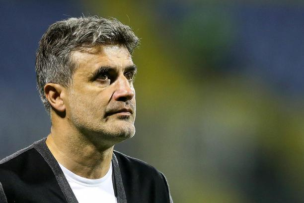

Dana 27. ožujka 2007. godine prekinuo je nogometnu karijeru i praktički odmah je postao športski direktor Dinama, a to je bio i do lipnja 2016. godine, devet godina. U jesenskom dijelu sezone 2013./14., najprije nakon smjene trenera Krunoslava Jurčića, a potom i Branka Ivankovića, Zoran Mamić preuzeo je i dužnost trenera Dinama, odlično se snašavši u ulozi u kojoj se ipak, kako sam kaže, dugoročno ne vidi te je najavio kako će Dinamo u zimi 2014. potražiti novog trenera kao dugoročnije rješenje, a Zoran Mamić će potom ponovno biti isključivo športski direktor kluba. Zanimljiv je podatak da je GNK Dinamo od kada je Zoran Mamić športski direktor, svake godine osvojio naslov prvaka Hrvatske, a klub je ostvario i 5 plasmana u Europsku ligu te 2 plasmana u Ligu prvaka. 2016. godine postao je trener Al Nassra, a za manje od godinu dana zamjenjuje Zlatka Dalića u Al Ainu.
